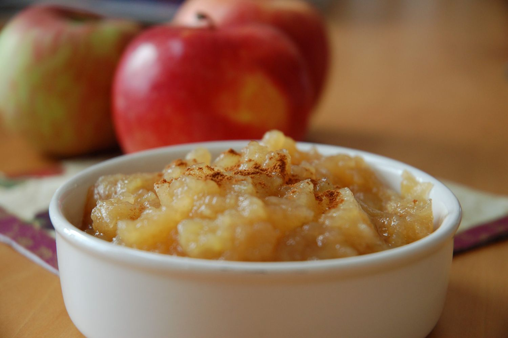

Sarah's Homemade Applesauce

Description
Making applesauce at home is easier than you think. Trust us: This wildly popular applesauce recipe will quickly become a go-to in your household.
Ingredients
- 4 apples - peeled, cored and chopped
- 3/4 cup of water
- 1/4 cup white sugar
- 1/2 teaspoon ground cinnamon
Steps
- Combine apples, water, sugar, and cinnamon in a saucepan; cover and cook over medium heat until apples are soft, about 15 to 20 minutes.
- Allow apple mixture to cool, then mash with a fork or potato masher until it is the consistency you like.